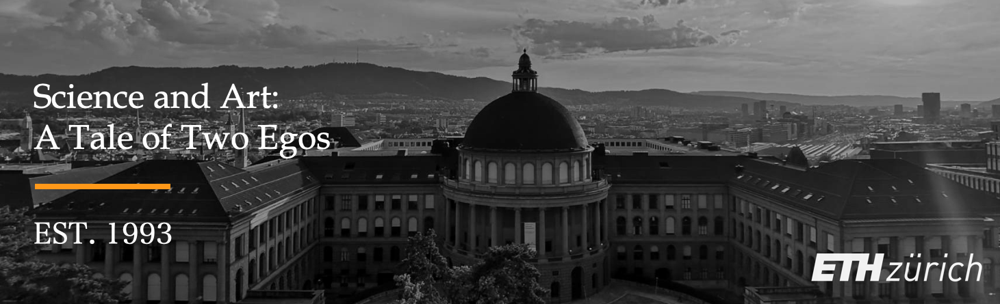

Who am I?
Hoi Zäme! My name is Hong Xu, currently I'm a final year Ph.D candidate at ETH Zürich with interdisciplinary background in Renewable Energy, Materials Science, and Data Science. On the Three Kings' Day 2021 in Switzerland, I successfully defended my PhD thesis at ETH Zürich on the recommendation of Prof. Thomas J. Schmidt, Prof. Marco Stampanoni and Dr. Jens Eller, with accumulated exciting research at Paul Scherrer Institute (PSI) and collaborative efforts from Toyota Motor Europe (TME).
I was admitted to the University as a 16 years old teenager, and I obtained my bachelor degree from Beijing Jiaotong University in 2013. Under the merit-based Erasmus Mundus MaMaSELF framework, I received dual-master degrees from University of Rennes 1 and Technical University of Munich in 2016 with thesis supervised by Prof. Peter Müller-Buschbaum.
AQG -> PEK -> CDG -> HAM -> MUC -> ZRH ✈ ?
Education
- 2017-2021 | Ph.D, Renewable Energy
ETH Zürich, Switzerland.
- 2014-2016 | M.Sc, Geomaterials & Physics (dual-degree)
Technical University of Munich, Germany. (Merit)
University of Rennes 1, France. (Très Bien)
- 2009-2013 | B.Sc, Materials Chemistry
Beijing Jiaotong University, China.
____
- 2020-2021 | MBA, Business Administration (part-time)
Quantic School of Business, Washington D.C.
Work Experience
- 2016-2021 | Doctoral Researcher, Hydrogen & Fuel Cell
Paul Scherrer Institute, Switzerland.
- 2015-2016 | Working Student, Chip Failure Analysis
Infineon Technologies AG, Germany.
- 2015-2016 | Research Assistant, Polymer & Sensors
Techinical University of Munich, Germany.
- 2015-2015 | Mechanical Intern, Materials Imaging
European XFEL GmbH, Germany.
Project Management
- 2017-2019 | Industrial Collaborator, Technical Transfer Co-Project
Toyota Motor Europe & PSI, Belgium.
- 2016-2020 | Academic Collaborator, Swiss National Science Co-Project
Swiss Light Source & PSI, Switzerland.
- 2015-2015 | Modelling Trainee, Haihe River Committee Co-project
École des Ponts ParisTech, France.
Extracurricular Activities
-
2021 | Part-time MBA Fellow
Quantic School of Business, USA [Cert.] -
2020 | Technology and Innovation Management
Course at D-MTEC ETH Zürich [Link] -
2020 | EPFL Workshop
Attendant at EPFL Applied Machine Learning Days [Link] -
2020 | PSI Intern Supervision
Mentor for PSI Intern in CT Image Processing [Link] -
2019 | Norvatis Hackathon
Pharma Data Science Prediction at Norvatis Leadership Forum [Link] -
2018 | Teaching Assistant
ETH Master Course Renewable Energy Technology II [Link] -
2010 | Volunteer Tutor
Volunteered as School Tutor for Jishuitan Elementary School in Beijing [Link]
Patents
-
Annular gas-liquid interface jigging magnetic separation device [P]
Inventors: Prof. M. Fu, Prof. H. Zhang, H. Xu (BJTU), Prof. L. Yan
Chinese Patent No.: CN102441489B, Granted on Oct 11, 2013. [Grant] -
Continuously operating annular gas-liquid interface jigging magnetic separation device [P]
Inventors: Prof. H. Zhang, H. Xu (BJTU), Prof. M. Fu, Prof. L. Yan
Chinese Patent No.: CN102441490A, Granted on Nov 1, 2013. [Grant] -
Ultrasonic-photocatalytic oxidation coupled fruit and vegetable cleaning device [P]
Inventors: X. Zhou, H. Xu (BJTU), Prof. H. Jiang, X. Qi
Chinese Patent No.: CN202311136U, Granted on May 9, 2012. [Grant]
Publications
-
H. Xu [PSI], M. Bührer, F. Marone, Prof. T. J. Schmidt, F. N. Büchi, J. Eller
Effects of Gas Diffusion Layer Substrates on PEFC Water Management: Part I. Operando Liquid Water Saturation and Gas Diffusion Properties [J]
(2021) Co-paper with Swiss Light Source (SLS). [In progress] -
H. Xu [PSI], M. Bührer, F. Marone, Prof. T. J. Schmidt, F. N. Büchi, J. Eller
Effects of Gas Diffusion Layer Substrates on PEFC Water Management: Part II. In Situ Liquid Water Desaturation via Evaporation [J]
(2021) Co-paper with Swiss Light Source (SLS).[In progress] -
H. Xu [PSI], S. Nagashima, H. Nguyen, K. Kishita, F. Marone, F. N. Büchi, J. Eller
Temperature Dependent Water Transport Mechanism in PEFC Gas Diffusion Layers Revealed by Subsecond Operando X-ray Tomographic Microscopy. [J]
(2021) J. Power Source . Co-paper with TOYOTA. [PDF] -
M. Bührer, H. Xu [PSI], J. Eller, J. Sijbers, Prof. M. Stampanoni, F. Marone
Unveiling water dynamics in fuel cells from time-resolved tomographic microscopy data [J]
(2021) Scientific Reports. Co-paper with Swiss Light Source (SLS). [PDF] -
H. Xu [PSI], M. Bührer, F. Marone, Prof. T. J. Schmidt, F. N. Büchi, J. Eller
Optimal Image Denoising for Operando XTM of Liquid Water in PEFC Gas Diffusion Layers. [J]
(2020) J. Electrochem. Soc. . Co-paper with Swiss Light Source. [PDF] -
H. Xu [PSI], F. Marone, S. Nagashima, H. Nguyen, K. Kishita, F. N. Büchi, J. Eller
(Invited) Exploring Sub-Second and Sub-Micron XTM Imaging of Liquid Water in PEFC GDLs.[J]
(2019) ECS Transactions. 92(8), 11-21 . Co-paper with TOYOTA. ECS Travel Grant [PDF] -
Y. Nagai, J. Eller, T. Hatanaka, S. Yamaguchi, S. Kato, A. Kato, F. Marone, H. Xu [PSI], F. N. Büchi.
Improving water management in fuel cells through microporous layer modifications: Fast operando tomographic imaging of liquid water. [J]
(2019) J. Power Sources. Co-paper with TOYOTA. [Link] -
H. Xu [PSI], M. Bührer, F. Marone, Prof. T. J. Schmidt, F. N. Büchi, J. Eller
Fighting the Noise: Towards the Limits of Subsecond X-ray Tomographic Microscopy of PEFC. [J]
(2017) ECS Transactions. Co-paper with Swiss Light Source (SLS). ModVal Poster Award [Link] -
Prof. H. Zhang, R. Wu, H. Xu [BJTU], F. Li, S. Wang, J. Wang, T. Zhang
A simple spray reaction synthesis and characterization of hierarchically porous SnO2 microspheres for an enhanced dye sensitized solar cell. [J]
(2017) RSC Advances. [Link] -
Prof. H. Zhang, H. Xu [BJTU], J. Wan, Prof. L. Yan, C. Dai
Preparations of new porous oxides spherical powders by spray reaction technique.[J]
(2012) Vacuum & Cryogenics. [Link(CN)] -
X. Qi, H. Xu [BJTU], X. Zhou
Degradation of highly active cypermethrin via ultrasonic irradiation combined with TiO2 photocatalysis.[J]
(2012) Chem. Res. [Link(CN)]
Reports
-
H. Xu [PSI], J. Eller, F. N. Büchi
Imaging of the water saturation in gas diffusion layers - Increasing temporal and spatial resolution. [R]
Collaboration Report. Toyota Motor Europe & PSI, 2019. [PDF] -
H. Xu [ETH], Prof. T. J. Schmidt, F. N. Büchi, J. Eller
Subsecond Dynamics of Liquid Water Transport in PEFC Revealed by 4D X-ray CT [R]
Research Plan. ETH Zürich & PSI, 2017. [PDF] -
H. Xu [LMU], B. Vincon-Leite (ENPC), Y. Luo (HWCC), G.F. Tao
Modelling of Cyanobacteria Dynamics for YuQiao Reservoir in Tianjin, China [R]
Training Report. Haihe River Committee, China & École des Ponts ParisTech, France, 2016. [doi] -
H. Xu [UR1], W. Lu, A. Madsen, S. Di Matteo
Design and Construction of the Test-Stand for Split and Delay Line of European XFEL. [R]
Technical Report. European XFEL, Hamburg, Germany, 2015. [doi]
Dissertations
-
H. Xu [ETH], Prof. T. J. Schmidt (examiner), Prof. M. Stampanoni (co-examiner)
Subsecond Operando X-ray Tomographic Microscopy of Liquid Water in Polymer Electrolyte Fuel Cells [D]
PhD Dissertation. Doctor of Philosophy. ETH ZÜRICH, Zürich, Switzerland, 2021. [PDF] -
H. Xu [TUM], E. Metwalli, Prof. P. Müller-Buschbaum, Prof. W. Schmahl (examiner)
Structure & Properties of Thermoresponsive DBC Embedded with Metal Oxide Nanoparticles. [D]
Master Dissertation. Master of Science. LMU&TU MÜNCHEN, Munich, Germany, 2016. [PDF] -
H. Xu [BJTU], Prof. H. Zhang
Application of Mesoporous SnO2 Materials in Dye-sensitized Solar Cells and Lithium Batteries. [D]
Bachelor Dissertation. Bachelor of Science. BJTU. Beijing, China, 2013. [PDF]
Presentations
-
H. Xu [PSI], M. Bührer, F. Marone, T. J. Schmidt, F. N. Büchi, J. Eller
Influence of Pore Size Distribution on Operando GDL Liquid Saturation.
236th Electrochemical Society Meeting (ECS), Atlanta, USA. 2019. [Oral] [Link] -
H. Xu [PSI], M. Bührer, F. Marone, T. J. Schmidt, F N. Büchi, J. Eller
Advancements in 10Hz operando X-ray Tomographic Imaging of Water in GDLs of PEFC.
8th Int. Conference on Fundamentals & Devel. of Fuel Cells (FDFC), Nantes, France. 2018. [Oral] [Link] -
H. Xu [PSI], M. Bührer, F. Marone, T. J. Schmidt, F N. Büchi, J. Eller
Studies of Water Distribution in the Gas Diffusion Layer of PEFCs using X-ray Tomographic Microscopy
69th Annual Meeting of the Int. Society of Electrochemistry (ISE), Bologna, Italy. 2018. [Poster] [Link] -
H. Xu [PSI], M. Bührer, F. Marone, T. J. Schmidt, F N. Büchi, J. Eller
Water Distribution in the Gas Diffusion Layer of PEFCs: X-ray Tomographic Microscopy Studies
15th Symposium on Modeling & Exp. Validation (ModVal), Aarau, Switzerland. 2018. [Poster Prize] [Link] -
H. Xu [PSI], M. Bührer, F. Marone, T. J. Schmidt, F. N. Büchi, J. Eller
Quantification of Feature Detectability for Subsecond X-ray Tomographic Microscopy of PEFC.
21st European Fuel Cell & Electrolyser Forum (EFCF), Luzern, Switzerland. 2017. [Oral][Link] -
H. Xu [PSI], M. Bührer, F. Marone, T. J. Schmidt, F. N. Büchi, J. Eller
Contrast-to-Noise Ratio Evaluation for X-ray Computed Tomographic Imaging of Water in Polymer Electrolyte Fuel Cells
14th Symposium on Modeling & Exp. Validation (ModVal), Karlsruhe, Germany. 2017. [Poster][Link] -
H. Xu [TUM], E. Metwalli, P. Müller-Buschbaum
Nanoparticles Embeded Thermoresponsive Diblock Copolymers for Magnetic Sensor Application.
2016 Erasmus MaMaSELF Program Status Meeting, Rigi Kulm, Switzerland. 2016. [Oral] [Link] -
H. Xu [TUM], E. Metwalli, P. Müller-Buschbaum
Magnetic properties and structure of thermoresponsive polystyrene-block-poly(N-isopropylacrylamide)/iron oxide nanocomposite thin films.
80th Annual Meeting of German Physical Society (DPG), Regensburg, Germany. 2016. [Poster] [Link] -
H. Xu [BJTU], Prof. H. Zhang, R. Wu
Mesoporous SnO2Microspheres: Synthesis, Characterization, and Application in Enhanced Dye-sensitized Solar Cells and Lithium Batteries.
2013 Energy Particles Frontier Seminar at Tsinghua University, Beijing, China. 2013. [Poster] [Link]
Honors & Awards
-
2018 | Poster Prize [Cert.]
ModVal Conference Committe, Aarau, Switzerland. [CHF 300] -
2012 | TECO Finalist [Cert.]
Taipei TECO Technology Foundatione, Taipei, R.O.China. -
2012 | National Bronze [Cert.]
8th CHALLENGE CUP Business Plan Competition, Beijing, China. -
2012 | Innovation Scholarship
Beijing Jiaotong University, Beijing, China. -
2010 | Learning Scholarship (3 years)
Beijing Jiaotong University, Beijing, China.
Training
-
2020 | Applied Machine Learning
EPF Lausanne, Lausanne, Switzerland. -
2020 | Industrial Computed Tomography
University of Applied Sciences, Wels, Austria -
2019 | IBM Data Science Professional Certificate
IBM Inc. & Coursera, USA. [Credential] -
2019 | Machine Learning in Imaging
University of Bern, Bern, Switzerland. -
2019 | Neural Networks & Deep Learning
deeplearning.ai & Coursera, USA. [Credential] -
2017 | Biomedical Imaging Summer School
University Hospital Zurich (USZ), Zurich, Switzerland. -
2016 | Applied Physics Summer School
Technical University of Munich, München, Germany. -
2015 | X-ray & Neutron Summer School
Université de Montpellier, Montpellier, France.
Funding
-
2016-2020 | Swiss National Science Foundation
Project No. 166064, Switzerland. [CHF 586'628] -
2017-2019 | Toyota R&D Fund
Industrial Co-project, Belgium. [CHF ***'***] -
2019-2019 | US Amry Research Office
ECS Travel Grant, Washington D.C, USA. [USD 1'500] -
2015-2016 | European Education, Audiovisual and Culture Executive Agency
Erasmus+ Mobility Grant, France. [EUR 2'640] -
2012-2013 | Beijing Jiaotong University
Innovation Experiment Project, China. [RMB 5'000]
Skills
-
English (fluent, C1), Chinese (native, C2), German (in-progress, A2-B1), French (basic, A2)
Photography, Writing, Video Editing, hiking, Table Tennis, Chinese Cuisines
Contact
-
E-mail: hong.xu [at] live.cn
Wechat: bits2energy (please add a note)
LinkedIn: www.linkedin.com/in/xuhong
Address: Rämistrasse 101, Zürich, CH-8092, Switzerland